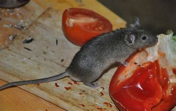
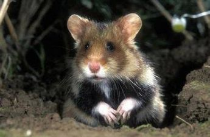
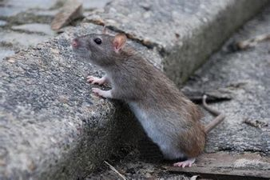
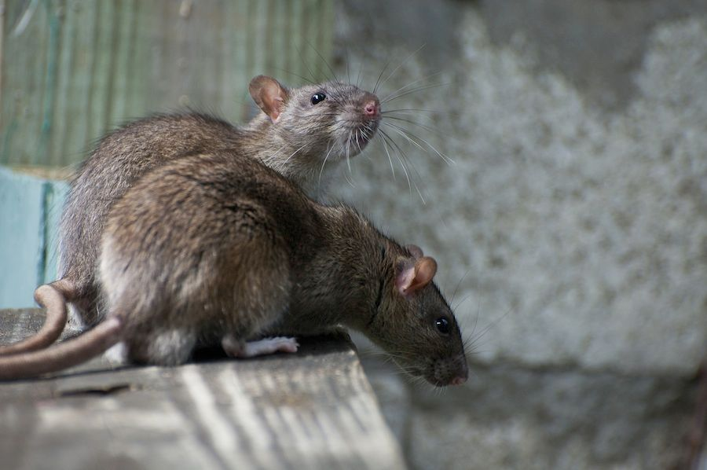

Obecné informace
Malí hlodavci, rozšířeni po celém světě.
Většinou všežravci, rostlinná potrava, ale zřídka kdy rostlinná potrava.
Žijí na zemi, ale dobře skáčí a lezou.
Neobyčejně plodní.
Velké oči a velké ušní boltce.
Dlouhý ocas.
1336 ze všech 4089 druhů savců.
Zástupci
Myš domácí
Křeček obecný
Potkan obecný
Krysa obecná
Myš domácí
Domácí škůdce.
Významný laboratorní modelový organismus.

Obrázek - Křeček polní

Obrázek - Potkan obecný

Obrázek - Krysa obecná
